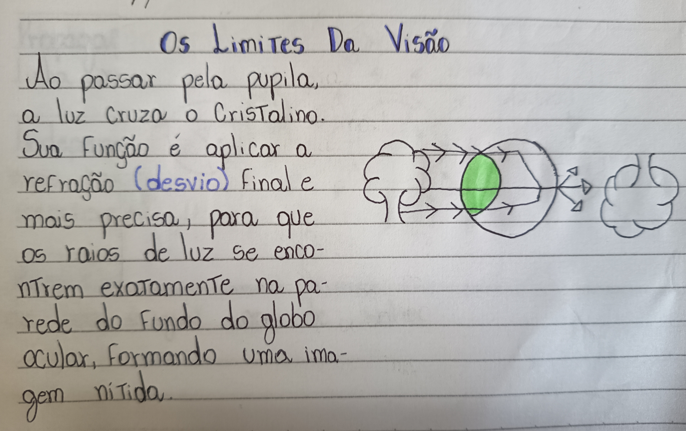
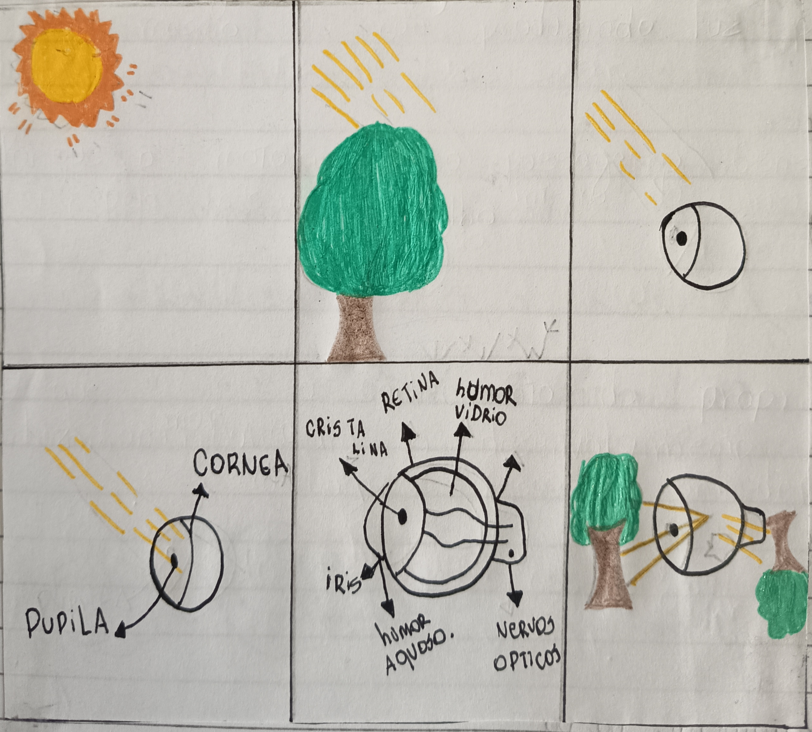
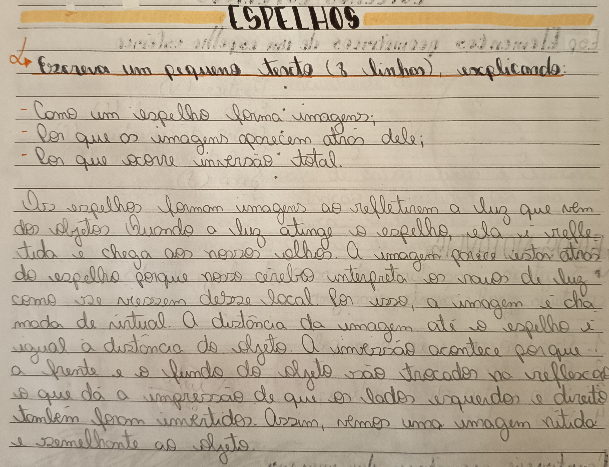
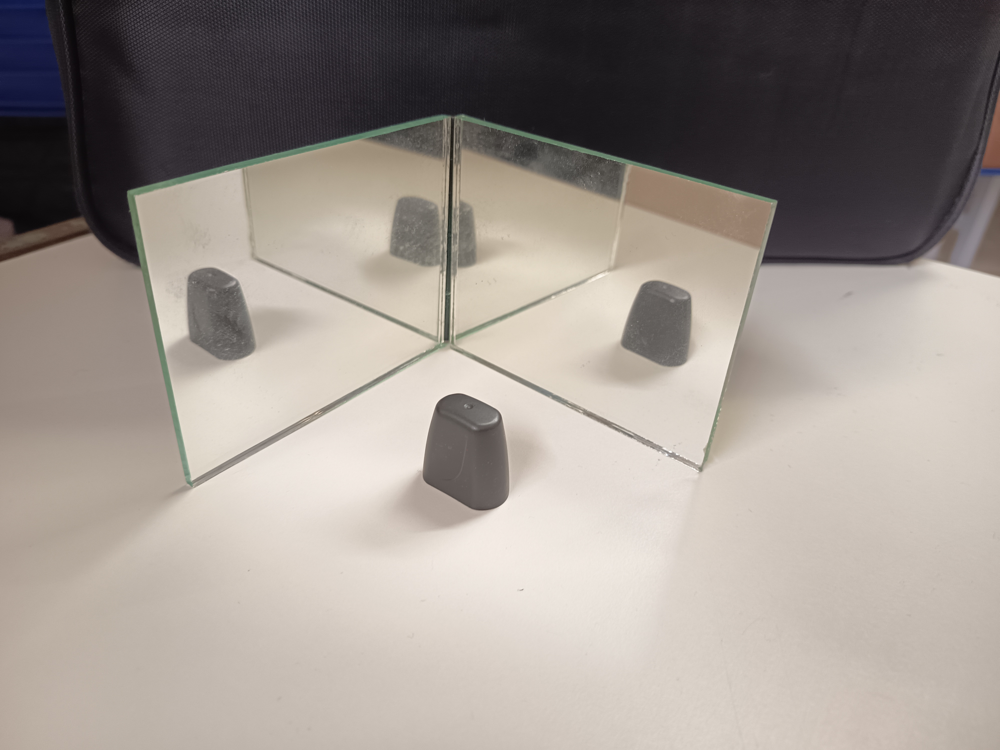
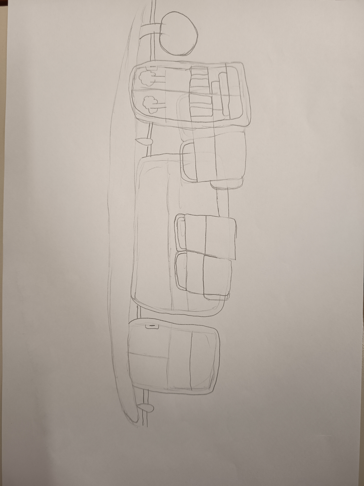
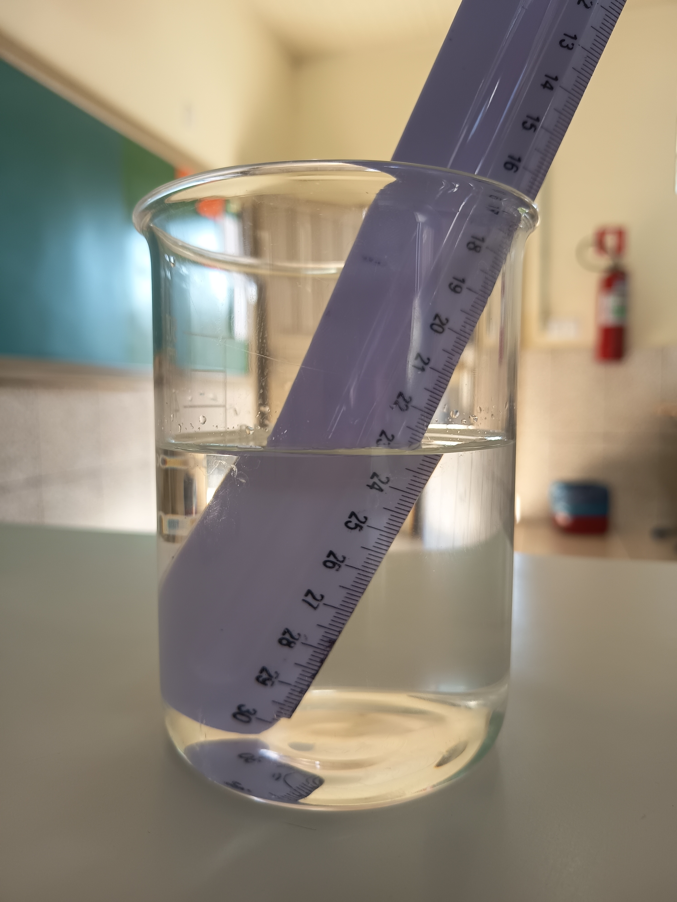
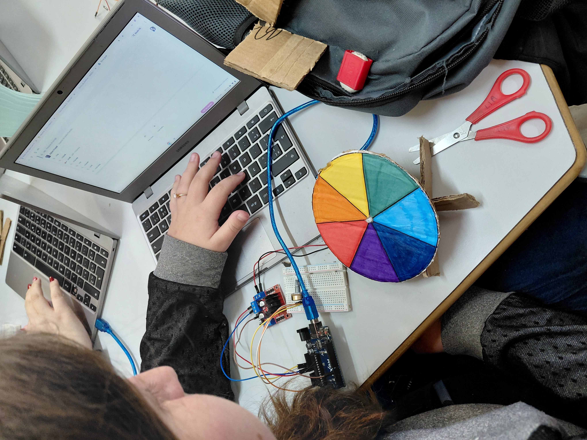

Física e Tecnociência
Robótica
A acessibilidade visual garante autonomia e inclusão para pessoas com deficiência ou baixa visão em ambientes físicos e digitais. Este projeto visa propor soluções práticas para eliminar barreiras e promover a igualdade de oportunidades.
Fizemos um post que envolve-se a ciencia e que encina-se como podemos divulgar algo da forma correta e sem prejudicar o autor da noticia ou fazer algo que não deveria ser feito.

Foi mostrado a estrutura e como funciona, e de que forma usamos a luz para enxergar, foi explicado metodos para auxiliar as pessoas com baixa ou nada de função visual.

Foi explicado como a imagem e refletida e o efeito que tem quando esta perto e longe.

Foi feito uma pratica onde foi colocado os espelhos um do lado do outro, assim mostrando como os espelhos podem duplicar as imagens.

Foi feito um desenho mostrando como os espelhos esfericos funcionam, e onde se utiliza.

Mostra a forma que refrata e por meio de, entendemos o porque isso é importante e como influencia o nosso cotidiano.

Conceito: Um disco com as sete cores do arco-íris que, ao girar em alta velocidade, mistura as cores na retina devido à persistência visual, resultando na percepção da luz branca. Prova que a luz branca é a soma de todas as cores.
Abordagem na Acessibilidade: Ajuda a entender a criação de paletas de alto contraste para daltonismo e baixa visão. Pode ser adaptado com texturas (acessibilidade tátil) para pessoas cegas compreenderem a fragmentação da luz.

Conceito:É a transição suave de brilho de um LED (acender e apagar gradualmente). Tecnicamente, isso é feito via PWM (Modulação por Largura de Pulso), controlando a quantidade de energia média enviada ao componente.
Abordagem na Acessibilidade: Essencial para pessoas com fotofobia (sensibilidade à luz), autismo (hipersensibilidade sensorial) e epilepsia fotossensível, pois elimina o impacto de luzes piscantes ou mudanças bruscas de iluminação, gerando conforto e segurança visual.
Conceito: Um único componente que reúne três LEDs internos: Vermelho (Red), Verde (Green) e Azul (Blue). Ao misturar as intensidades dessas três cores primárias de luz, é possível gerar quase qualquer cor do espectro visível.
Abordagem na Acessibilidade:Permite a sinalização customizada (luzes de alerta específicas para acessibilidade arquitetônica) e a adaptação de telas para modos de alto contraste ou "Modo Noturno" (redução de luz azul), protegendo a visão e facilitando a leitura para daltonistas e pessoas com baixa visão.